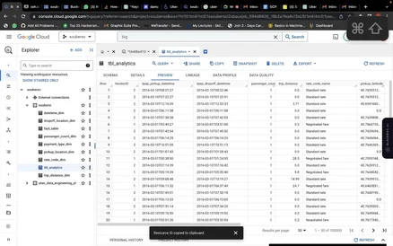
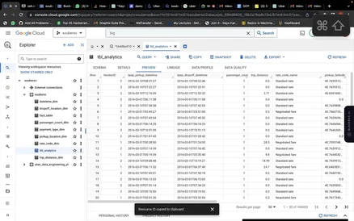
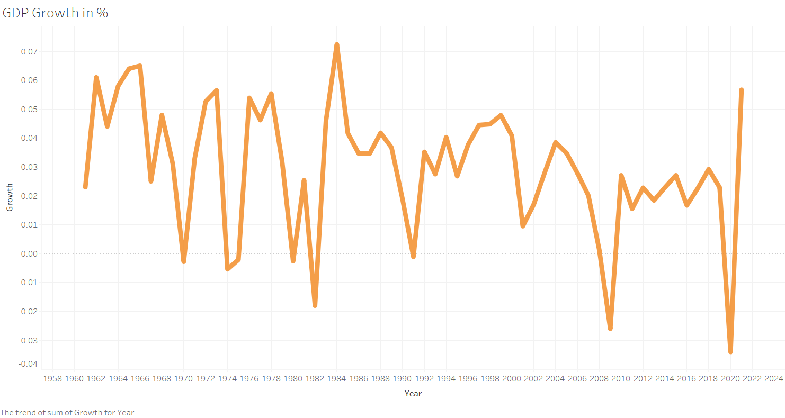
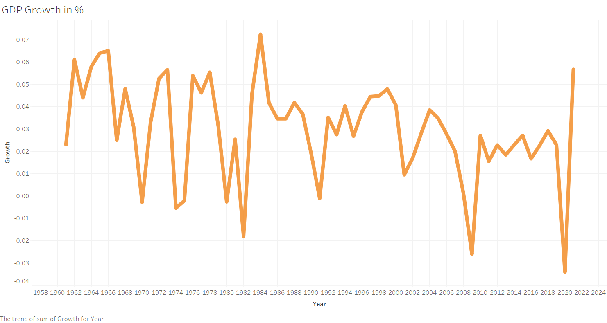
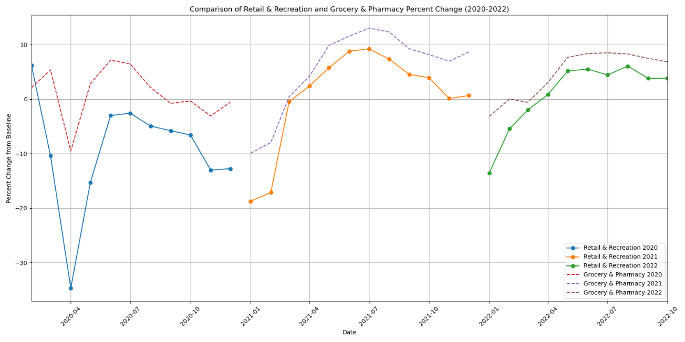
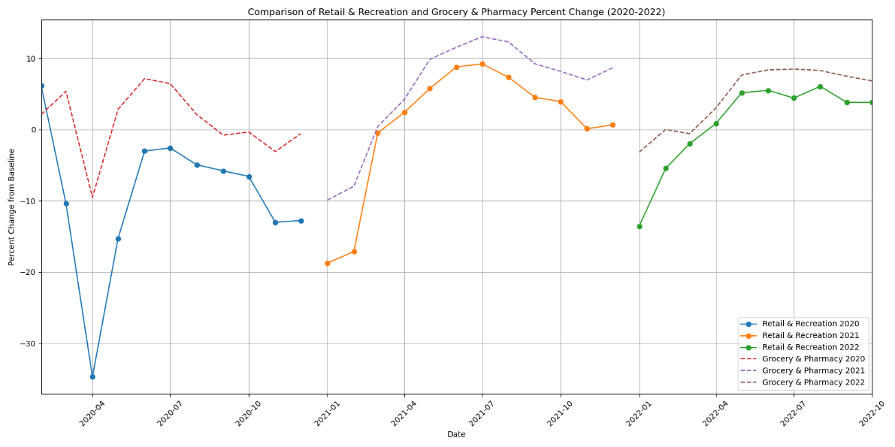

Data Scientist Intern
Novitium Pharma
USA
USA
I’m a Data Science M.S. graduate student with strong skills in Python, SQL, machine learning, NLP, and data engineering. I automate data extraction with Selenium, SOAP, and Requests, then clean, encode, and analyze datasets to improve quality and speed. I create clear dashboards and reports in Power BI/Tableau and work with Looker, PostgreSQL/MySQL, PySpark, Azure, and Apache Spark. Known for combining automation, analytics, and modeling to deliver actionable insights and measurable efficiency gains, with a practical, results-first mindset every day.
Python, R, SQL, HTML5, CSS, JavaScript, Statistics, EDA, Data Cleaning, Feature Engineering, Data Visualization, Reporting
Power BI, Tableau, Looker, Gephi, Microsoft Office, KPI Design, Dashboarding, Reporting
Machine Learning, Apache Spark, PySpark, ETL, MySQL, PostgreSQL, MongoDB, HDFS, AWS CLI, Azure, SAS, APIs

Automated extraction of pharmaceutical sales and marketing data from Clarivate and Orange Book sources using Selenium and Python. Implemented resilient scraping with pagination handling, retries, and field validation. Cleaned missing values, standardized formats, and applied one-hot encoding to prepare modeling-ready datasets. Reduced manual preprocessing time by about 50% and delivered reusable scripts and summary outputs that enabled faster reporting and trend analysis for analysts. Automated scheduled runs and versioned datasets for consistent refresh.
Built a Twitter-based complaint segregation pipeline to classify and prioritize issues using sentiment polarity and intensity. Collected tweets via SOAP, Selenium, and Requests, then translated non-English content with MBART for consistent processing. Applied a RoBERTa model to score sentiment and categorize complaints, reducing manual testing by roughly 80%. Produced dashboards and plots to track volumes, acknowledgments, actions taken, and trends over time. Logged failures, tuned thresholds, and shared results for stakeholder feedback cycles.
 

This project uses the "NYC 2023" dataset and Google Cloud Platform (GCP) to improve urban public transportation accessibility by analyzing data and collaborating with stakeholders to enhance transit quality, involving data acquisition, processing with Mage ETL, storage in Google Cloud Storage, analysis in BigQuery, and visualization in Looker dashboards, focusing on data security and scalability, with success measured by increased ridership, accessibility, reduced congestion, and rider satisfaction, modeling GCP for urban transit solutions.
Analyzed character interaction networks across five A Song of Ice and Fire books using weighted nodes and edges. Cleaned interaction data, then built Gephi visualizations with ForceAtlas2, Fruchterman-Reingold, Yifan Hu, and OpenOrd layouts. Computed degree, betweenness, and eigenvector centrality plus modularity communities to identify central characters, bridge nodes, and factions. Exported publication-ready graphs and ranked summaries, documenting parameters for reproducibility. Compared community structures across books to observe shifting alliances and narrative focus changes.
 

Created a Tableau dashboard linking U.S. GDP (1961–2021), COVID-19 cases (2020), and unemployment indicators (1979–2022). Cleaned and standardized fields across sources, then blended datasets using a shared Year key. Built interactive filters and time-series views to compare pre-pandemic vs. pandemic periods and highlight contraction and recovery patterns. Added annotations and tooltips to explain key inflection points and support stakeholder decision discussions. Presented final insights as story points and recommended metrics for future monitoring.
Built a Tableau visualization project combining four U.S. datasets—statewise population (2020), climate surface temperature trends, hospital locations/ownership, and Chicago daily traffic counts—to explain how demographic patterns, climate variation, healthcare access, and city mobility relate to each other. Cleaned and standardized the datasets, performed exploratory analysis, and produced map-based visuals for population distribution, temperature gradients, hospital ownership clusters in Chicago, and a traffic heatmap to highlight congestion hotspots for planning and policy insights.
 

Built a Tableau dashboard using Google Community Mobility (2020–2022) and tourism/mobility data (1995–2021) to examine movement shifts during COVID-19. Cleaned datasets, aligned dates, and created KPI summaries for retail, grocery, parks, transit, workplaces, and residential categories. Designed interactive filters to compare regions and periods, highlighting recovery speed and persistent behavior change. Included baseline explanations, annotations, and clear navigation for nontechnical viewers. Provided slicers for weekday/weekend views and emphasized privacy-safe aggregated mobility reporting weekly.

Built a lightweight web app that generates a tailored resume (DOCX) and cover letter (PDF) from a user’s uploaded base resume and a pasted job description. The front end provides a simple input form to submit the job description and download the generated outputs, while the Flask backend orchestrates the generation flow and keeps running until the user clicks a Terminate Process button for graceful shutdown.
Published in AIP Conference Proceedings, 2025
DOI:
https://doi.org/10.1063/5.0255988
Healthcare organizations aim to improve service efficiency and patient outcomes by integrating clinical decision support (CDS) with electronic health record (EHR) systems. This integration offers benefits such as better care coordination, increased effectiveness, and reduced errors. However, challenges include installation costs and the need for clinician training. The report suggests creating a precise implementation strategy and involving clinicians to overcome these issues. Despite the difficulties, the potential benefits to patient care make this integration worthwhile for healthcare organizations.
Published in AIP Conference Proceedings, 2025 DOI: https://doi.org/10.1063/5.0254757
A "Virtual Persona" is a digital representation of a user or customer in e-commerce, ranging from a profile picture to an interactive 3D model. These personas can enhance online shopping by increasing customer engagement, improving the shopping experience, and boosting loyalty. However, implementing them requires technical expertise and raises privacy concerns. Overall, Virtual Personas have the potential to transform customer interactions in e-commerce.
If you have any questions or need my expertise, feel free to reach out. Fill out the form and I'll get back to you as soon as possible.
Address: Aurora, Illinois, USA
Phone: +1 779 390 8922
Email: santhosh2003.ac@gmail.com
LinkedIn: LinkedIn